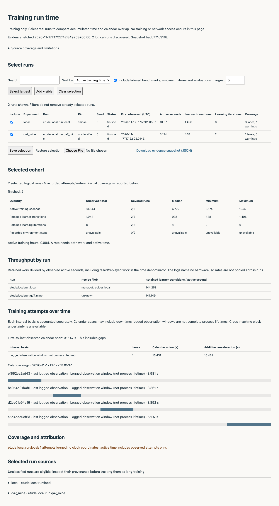

Revision 7e20d6f7e4, 2026-11-17, laptop, Etude SDK 0.4.1. Covers what changed since the sixth pass (a361d8795c:scratch/qa.html): 3850764dd8 (silent retries, local smoke labels) and 54b67f6cd9 (labels only when supplied). Earlier passes: 31d18ac84b and 30cbca02ff.
$ ETUDE_HOME=/tmp/qa7/etude uv run etude train manabot/recipes/local.py (5.6 s, exit 0) $ uv run etude train manabot/recipes/local.py --resume --until updates=4 (exit 0) $ uv run etude train manabot/recipes/local.py --resume --until updates=4 etude: run_already_finished: finished at updates=4, learner_transitions=837, training_seconds=5.81376; give --until with a later target (exit 1) $ (--resume --until updates=6, SIGINT to the process group after 2 s, before its first row) exit 130 $ uv run etude train manabot/recipes/local.py --resume --until updates=6 (exit 0)
A recipe file calling self_play(inputs, run, updates=config.updates) with no labels, as the guide's listing shows
(placed temporarily under manabot/recipes/, removed after): etude train exit 0.
$ uv run --extra reports manabot training-report --source $ETUDE_HOME/track --out default.html default.html: 2 logical runs; 0 source/coverage warnings
Driven in headless Chromium (no console errors). Default selection shows only the unlabeled run:
qa7_mine etude:local:run:qa7_mine unclassified finished 3.174 s 448 transitions 2 updates Throughput: etude:local:run:qa7_mine unknown 141.149 transitions / active second
Ticking "Include labeled benchmarks, smokes…" then Select largest adds the smoke:
local etude:local:run:local smoke finished 10.37 s 1,496 transitions 6 updates 3 lanes; 1 warnings Throughput: etude:local:run:local manabot.recipes.local 144.258

The interrupted attempt no longer blanks the run: totals reach update 6 and the coverage section warns once. Both defects the sixth pass listed (smoke labelled unclassified; a silent attempt making updates and active time unavailable) are gone.
The coverage warning read "1 attempts logged no clock coordinates". manabot/reports/time_sources.py now
pluralizes; re-rendered page says "1 attempt logged no clock coordinates; active time includes observed attempts only."
pytest tests/training/test_time_cohort.py tests/training/test_self_play_loop.py -q: 23 passed before, test_time_cohort 11 passed after.
Fresh train, resume, already-finished refusal, Ctrl-C mid-resume and completion, labelled smoke excluded by default, an unlabeled user recipe shown as unclassified with "unknown" recipe, totals preserved across a silent attempt.
Baseline/Elemental runs (unlabeled path checked through an equivalent user recipe instead); GPU and launched runs (capacity, see plan.md); cold clean-machine install; runs written before the label change mixed with new ones in one report.
Carried over from the sixth pass: tests/test_policy_container_support.py collection error (predates the branch),
the check_loopflow_workflows.py lf-drift failure, the encoder focus log, slow smoke eval on a laptop.
Minor: the Coverage column still says "1 lanes".